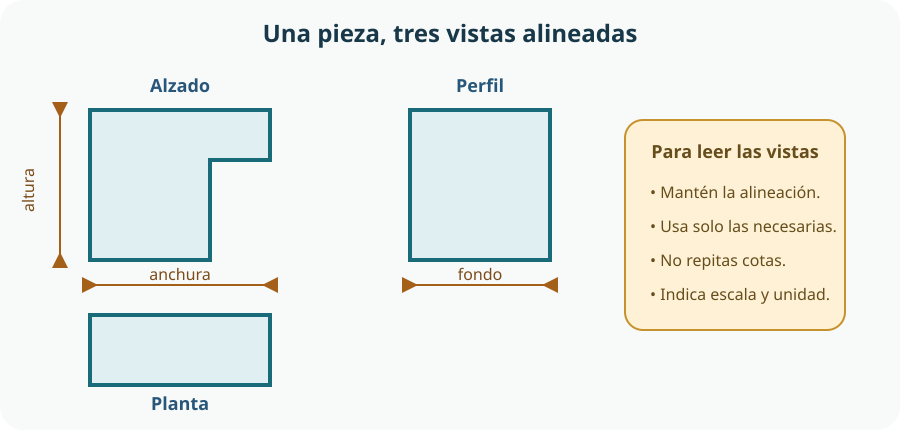

A lo largo del tema seguiremos un mismo caso: un organizador modular accesible para guardar herramientas y componentes del aula-taller. Sus bandejas deben poder cambiar de posición, distinguirse con facilidad, agarrarse sin esfuerzo excesivo y encajar sin atascarse. El reto permite ver que una buena idea no basta: hay que representarla, fabricarla, medirla y revisarla.
- distinguir boceto, croquis, plano técnico y modelo tridimensional y elegir cuál conviene en cada fase;
- interpretar vistas diédricas y representar solo las necesarias para definir una pieza;
- usar escalas, cotas funcionales y tolerancias sencillas sin repetir información;
- explicar un flujo introductorio de CAD 3D paramétrico basado en bocetos, restricciones y operaciones;
- comparar fabricación manual, mecanizada y digital, y procesos aditivos y sustractivos;
- seleccionar medidas preventivas según la jerarquía de controles, sin reducir la seguridad al uso de EPI;
- entender el prototipo como una hipótesis física que se prueba, mide y mejora, no como el producto final.
1. De una necesidad abierta a una definición fabricable
Diseñar es tomar decisiones para transformar una necesidad en una solución posible. «Ordenar el taller» es demasiado amplio para fabricar nada. Primero hay que convertir esa necesidad en requisitos verificables: qué debe contener el organizador, quién lo utilizará, dónde se colocará, qué dimensiones máximas tendrá y cómo sabremos si funciona.
| Necesidad | Requisito de diseño | Cómo se comprobará |
|---|---|---|
| Encontrar rápido cada elemento | Etiquetas legibles, contraste visual y posiciones estables. | Una persona localiza tres elementos sin ayuda y sin mover otros módulos. |
| Adaptarse a materiales distintos | Módulos intercambiables de dos o tres tamaños compatibles. | Cada módulo encaja en más de una posición de la base. |
| Facilitar el agarre | Tirador amplio, bordes redondeados y espacio para introducir los dedos. | Usuarios con manos de distinto tamaño lo extraen sin pinza fina ni fuerza excesiva. |
| Evitar caídas y enganches | Base estable, aristas no cortantes y bandejas que no sobresalgan del paso. | Permanece estable con la carga prevista y supera una inspección visual y una comprobación con paño, galga o útil adecuado; nunca con la mano desnuda. |
| Ajustarse al aula | Anchura, altura y fondo máximos definidos a partir del espacio real. | Medición con regla, calibre o cinta y prueba en el lugar de uso. |
Un requisito útil describe una condición, no impone prematuramente una solución. «Debe poder identificarse sin depender solo del color» deja abiertas opciones como texto, iconos o relieve; «debe llevar una etiqueta azul» decide antes de investigar. La accesibilidad se incorpora desde el comienzo: no se añade al final como adorno.
2. Boceto, croquis, plano y modelo: representaciones con distinta finalidad
Una solución tecnológica se representa varias veces y con distintos grados de precisión. No son nombres intercambiables ni pasos que haya que completar por rutina: cada representación responde a una pregunta.
| Representación | Características | Para qué sirve | En el organizador |
|---|---|---|---|
| Boceto | Dibujo rápido, normalmente a mano alzada, sin obligación de escala ni medidas completas. | Explorar alternativas y comunicar la idea general. | Comparar una base mural, una caja apilable y una bandeja de sobremesa. |
| Croquis | Dibujo a mano alzada, proporcionado y acompañado de las medidas y notas necesarias. | Concretar la solución y preparar su definición técnica. | Anotar anchura de módulos, profundidad y forma del tirador tras medir el espacio. |
| Plano técnico | Representación normalizada, precisa, a escala indicada, con vistas, cotas y datos de fabricación. | Comunicar sin ambigüedad qué debe fabricarse o verificarse. | Definir la base y un módulo para que otra persona pueda reproducirlos. |
| Modelo 3D | Representación espacial física o digital. El digital puede contener geometría exacta y parámetros; el físico permite tocar y probar. | Visualizar, simular relaciones, generar documentación o ensayar. | Comprobar el alcance del tirador y el encaje antes de fabricar la versión completa. |
Un render atractivo no sustituye al plano: puede enseñar el aspecto, pero ocultar dimensiones, tolerancias o caras interiores. Tampoco un archivo para imprimir sustituye al modelo CAD editable. El conjunto de documentos debe conservar la intención de diseño.
Vistas diédricas: observar sin perspectiva
Las vistas diédricas representan una pieza mediante proyecciones perpendiculares sobre planos. Las principales son alzado (vista principal), planta (desde arriba) y perfil (lateral). Las superficies paralelas al plano de proyección aparecen en verdadera forma y los segmentos paralelos, en verdadera longitud; los elementos oblicuos aparecen acortados.

- Se elige como alzado la vista que mejor explica la forma o la función, no necesariamente la cara «delantera» por costumbre.
- Las vistas se mantienen alineadas: una misma altura coincide entre alzado y perfil; una misma anchura, entre alzado y planta.
- Las líneas continuas muestran contornos visibles; las discontinuas pueden indicar aristas ocultas.
- Se dibuja el mínimo número de vistas que defina la pieza sin ambigüedad. Una pieza prismática sencilla quizá necesite dos; una geometría compleja puede exigir tres, un corte o un detalle.
3. Escala, acotación y tolerancias: del dibujo a la medida real
La escala relaciona la medida dibujada con la medida real mediante la expresión escala = medida en el dibujo / medida real. En 1:1 ambas coinciden; en 1:2 el dibujo mide la mitad; en 2:1 se representa al doble para ver un detalle. La cifra escrita en una cota expresa la medida real, aunque el plano esté ampliado o reducido.
| Situación | Tipo | Ejemplo |
|---|---|---|
| La pieza cabe con claridad en la hoja. | Escala natural | 1:1 para una pestaña o un separador. |
| El objeto es mayor que el espacio disponible. | Escala de reducción | 1:2 o 1:5 para la vista general del organizador. |
| Un detalle es demasiado pequeño. | Escala de ampliación | 2:1 o 5:1 para explicar un encaje. |
Acotar es indicar de manera normalizada las dimensiones necesarias para definir y fabricar. ISO 129-1 establece principios generales para presentar dimensiones y tolerancias en documentación técnica.[1] Una cota se compone habitualmente de líneas auxiliares, línea de cota, terminaciones y cifra; se coloca donde se interprete con claridad y, siempre que sea posible, fuera del contorno.
Cotas funcionales y cotas no duplicadas
Las cotas funcionales controlan la relación de la pieza con su función o con otras piezas: anchura de un módulo que entra en un hueco, distancia entre anclajes o diámetro de un eje. Deben priorizarse porque un error en ellas puede impedir el uso aunque el objeto «se parezca» al dibujo.
- Cada dimensión necesaria se indica una sola vez. Repetirla en dos vistas puede crear contradicciones cuando se modifica el plano.
- No se obliga a quien fabrica a obtener medidas importantes sumando, restando o midiendo sobre el papel.
- Las cotas parten de referencias coherentes para evitar que pequeños errores se acumulen en una cadena.
- Se emplean símbolos normalizados cuando proceda: por ejemplo, Ø para diámetro y R para radio.
- No se escribe una precisión que el proceso no puede conseguir ni que la función no necesita.
Medida nominal, medida real y tolerancia
Fabricar no produce dimensiones matemáticamente exactas. La medida nominal es la indicada en el diseño; la medida real es la obtenida al medir la pieza. La tolerancia expresa el intervalo de variación aceptable. Si una anchura se especifica como 40 ± 0,3 mm, se acepta entre 39,7 y 40,3 mm.
La tolerancia se decide según función, material, proceso y medios de medida. Una tolerancia demasiado estrecha aumenta tiempo, coste y rechazos; una demasiado amplia puede causar holgura, atasco o inestabilidad. En un encaje no basta con diseñar dos medidas idénticas: hay que prever la variación del proceso, el acabado y la holgura necesaria.
4. Del croquis al CAD 3D paramétrico
El diseño asistido por ordenador o CAD permite construir una representación geométrica precisa, modificarla y obtener vistas o archivos de intercambio. No diseña por nosotros: hace más rápida y coherente la gestión de decisiones. FreeCAD, por ejemplo, es una aplicación de modelado paramétrico y su documentación presenta los entornos y objetos con los que se construyen modelos.[2]
En un flujo paramétrico, la forma depende de medidas y relaciones explícitas. Si la anchura de un módulo es un parámetro, cambiar su valor puede actualizar las operaciones posteriores. Esto es más robusto que desplazar caras «a ojo», siempre que el modelo esté bien organizado.
Elegir origen, planos de trabajo y dimensiones clave: anchura del módulo, espesor, profundidad y holgura prevista.
Dibujar un perfil sencillo con líneas, arcos o círculos sobre un plano.
Añadir dimensiones y relaciones geométricas: horizontalidad, perpendicularidad, igualdad, simetría, coincidencia o tangencia. La documentación de Sketcher explica que las restricciones controlan posiciones y geometría.[3]
Aplicar una operación como extrusión, revolución, vaciado, redondeo o chaflán, y construir la pieza en una secuencia comprensible.
Comprobar medidas, interferencias, espesores y orientación; nombrar operaciones y guardar el archivo editable.
Generar una copia en el formato que admita el flujo de fabricación, sin perder el original paramétrico.
Un boceto queda bien definido cuando no conserva movimientos que puedan alterar la intención. No se trata de acumular cotas: conviene combinar pocas dimensiones significativas con relaciones geométricas. Para una bandeja simétrica, definir un eje y restringir ambos lados respecto a él es más claro que acotar cada lado por separado.
Archivo editable, formato de intercambio y archivo de máquina
| Tipo | Qué conserva | Precaución |
|---|---|---|
| Proyecto CAD editable | Operaciones, restricciones, parámetros y, según el programa, historial. | Es la fuente para modificar el diseño; no debe sustituirse por una malla exportada. |
| Intercambio geométrico | La forma en una representación que otros programas pueden leer. | Puede perder parámetros o características; hay que comprobar unidades y compatibilidad. |
| STL | Una superficie aproximada mediante triángulos. | No conserva por sí mismo la intención paramétrica y tiene limitaciones para unidades, color y materiales. |
| 3MF | Una o varias mallas con unidades definidas y posibilidad de incluir más información en un contenedor. | Que el formato permita datos no garantiza que todos los programas interpreten todas las extensiones. |
| Instrucciones de fabricación | Trayectorias y parámetros preparados para un equipo y una configuración concretos. | No son un modelo editable universal ni deben ejecutarse sin revisar proceso, material y equipo. |
La especificación 3MF define un formato de fabricación tridimensional empaquetado, con geometría, unidades y mecanismos de extensión.[4] La documentación de un laminador real confirma que admite formatos como 3MF y STL y que 3MF puede conservar un proyecto con más información que una malla STL.[5] Aun así, STL o 3MF son copias de intercambio o fabricación, no garantía de imprimibilidad: hay que verificar que la malla sea cerrada, que la escala y la orientación sean correctas y que los espesores y detalles sean viables.
modulo_v03_holgura04.3mf permite relacionar el objeto fabricado con la decisión ensayada mejor que final_definitivo_2.stl.5. Elegir un proceso de fabricación
Fabricar es transformar material mediante una secuencia de operaciones. La elección depende de la geometría, el material, la precisión necesaria, el número de unidades, el tiempo, el coste, los residuos, los equipos disponibles y los riesgos. La misma pieza puede producirse por métodos diferentes, pero no con idéntico resultado.
| Familia | Cómo transforma | Ejemplos generales | Decisiones clave |
|---|---|---|---|
| Manual | La persona guía directamente la herramienta y aporta parte o toda la energía. | Medir, marcar, cortar con herramienta manual, perforar, limar, doblar y unir. | Sujeción, postura, trazado, habilidad, orden de operaciones y acabado. |
| Mecánica | Una máquina aporta movimiento o energía; la persona prepara, controla y verifica. | Taladrado, aserrado, lijado o mecanizado con equipos adecuados. | Resguardos, parámetros compatibles, fijación y formación autorizada. |
| Digital | Un archivo dirige una máquina programable. | Impresión 3D, corte o mecanizado controlado numéricamente. | Formato, material, trayectorias, escala, calibración y comprobación previa. |
«Digital» no significa automático en todo ni libre de error. Antes de iniciar una fabricación se prepara el material; después pueden ser necesarios retirada de soportes, limpieza, desbarbado, lijado, unión o inspección. La persona sigue siendo responsable de comprender el proceso y respetar el procedimiento del aula.
Fabricación aditiva y sustractiva
Aditiva: añadir material
Construye la pieza depositando, uniendo o solidificando material de forma selectiva, a menudo por capas. Facilita geometrías internas y piezas personalizadas, pero puede necesitar soportes, tiempo de fabricación y posprocesado. La orientación influye en superficie, resistencia y duración.
Sustractiva: retirar material
Parte de una pieza o plancha mayor y elimina material por corte, perforación, fresado o lijado. Puede producir caras precisas y aprovechar materiales comerciales, pero genera recortes o viruta y la herramienta debe poder acceder a la zona.
El corte digital de planchas es sustractivo aunque el archivo sea vectorial y la máquina esté controlada por ordenador. La impresión 3D es aditiva, pero no imprime «el objeto CAD» directamente: un programa prepara capas, recorridos y parámetros. Ninguna familia es siempre mejor. Para el organizador puede convenir una base de tablero cortado y módulos impresos, o una solución enteramente manual si cumple mejor los requisitos con menos recursos.
6. Seguridad en el taller: controlar el riesgo antes de trabajar
Un peligro es una fuente con capacidad de causar daño; el riesgo combina la posibilidad de que el daño ocurra y su gravedad. La seguridad empieza antes de tocar una herramienta: identificar peligros, valorar quién puede quedar expuesto y seleccionar medidas eficaces. Las herramientas manuales también provocan accidentes, por lo que su elección debe ajustarse a la persona, la tarea y el entorno.[6]
Jerarquía de controles
Las medidas no protegen todas por igual. Se prioriza actuar sobre el peligro y no depender únicamente de la atención individual:
- Eliminar: evitar una operación peligrosa si el diseño puede resolverla de otro modo.
- Sustituir: emplear un material, proceso o herramienta menos peligroso que cumpla la función.
- Controles técnicos o colectivos: resguardos, enclavamientos, extracción localizada, pantallas y sistemas de sujeción.
- Controles organizativos: formación, autorización, procedimiento, señalización, mantenimiento, orden, supervisión y limitación de acceso.
- Equipos de protección individual (EPI): protección ocular, auditiva, respiratoria o de otra clase seleccionada para el riesgo residual.
Los EPI son el último escalón, no porque carezcan de importancia, sino porque protegen a quien los lleva y dependen de selección, ajuste y uso correctos. El INSST indica que deben emplearse cuando los riesgos no se han podido evitar o limitar suficientemente mediante protección colectiva u organización.[7]
| Peligro | Control prioritario | Conducta segura complementaria |
|---|---|---|
| Pieza que se mueve durante el corte o perforado | Sistema estable de sujeción y equipo con resguardos adecuados. | Comprobar la fijación con el equipo parado y mantener las manos fuera de la trayectoria. |
| Proyección de partículas o aristas | Elegir proceso que reduzca proyecciones; colocar resguardo o pantalla. | Usar protección indicada y retirar rebabas con la herramienta apropiada. |
| Polvo, vapores o humos | Sustituir el material si procede y emplear encerramiento o extracción adecuados. | No usar materiales no autorizados; limpiar con el método establecido. |
| Calor, partes móviles o energía eléctrica | Aislamiento, resguardos, enclavamientos y desconexión segura para intervenir. | No tocar ni ajustar durante el funcionamiento; esperar el tiempo indicado. |
| Incendio en corte térmico o láser | Equipo cerrado y mantenido, extracción operativa y materiales autorizados. | No dejar el proceso sin vigilancia y seguir el plan del taller. |
En corte láser o térmico importan tanto la radiación como los peligros no ópticos: incendio, humos y productos de descomposición. Una guía de seguridad de MIT recomienda equipos encerrados con enclavamientos, extracción adecuada, formación específica, lista de materiales admitidos y vigilancia durante el trabajo.[8] Estas ideas explican los controles, pero no sustituyen el manual, la evaluación de riesgos ni las normas del equipo y del centro.
7. Prototipar, verificar y mejorar: aprender del resultado
Un prototipo es una representación construida para responder preguntas y reducir incertidumbre. No es necesariamente bonito, completo, resistente ni idéntico al producto final. Puede probar solo el volumen, un encaje, la ergonomía, la estabilidad o el proceso de fabricación. Llamarlo «producto final» demasiado pronto oculta fallos y frena la mejora.
| Pregunta | Prototipo suficiente | Evidencia |
|---|---|---|
| ¿Cabe en el espacio y se alcanza con comodidad? | Maqueta de cartón a tamaño real. | Observación de uso y medidas del volumen ocupado. |
| ¿Encajan base y módulo? | Fragmento que incluya solo el alojamiento y la pestaña. | Medición de ambas piezas y repetición de inserciones. |
| ¿Soporta la carga prevista? | Módulo con material y unión representativos. | Ensayo hasta la carga máxima fijada, con zona aislada, supervisión, incremento controlado y parada ante deformación, fisura, deslizamiento o inestabilidad. |
| ¿Se identifican los compartimentos? | Conjunto de etiquetas con texto, icono, contraste o relieve. | Prueba con varias personas y tiempo de localización. |
| ¿Puede repetirse la fabricación? | Dos o más unidades producidas con el mismo archivo y proceso. | Comparación de medidas, encaje y defectos. |
Verificar con datos, no con impresiones
Verificar es comparar el resultado con requisitos definidos antes de probar. «Parece que funciona» no basta. Cada requisito necesita un indicador, un instrumento o método, una condición de prueba y un criterio de aceptación.
Ejemplo: una forma de tirador permitirá extraer el módulo sin pinza fina.
Definir quién prueba, con qué carga, cuántas repeticiones y qué se observará o medirá.
Anotar valores reales, unidad, instrumento, versión de la pieza y observaciones. Registrar también fallos.
Decidir si se cumple, no se cumple o la prueba es insuficiente. Diferenciar un defecto de diseño de un defecto de fabricación.
Modificar parámetro, geometría, material o proceso y justificarlo con la evidencia.
Una mejora del agarre puede reducir volumen interior; se vuelven a comprobar los requisitos afectados.
Para dimensiones exteriores puede bastar una regla; para pequeños espesores o encajes puede requerirse un calibre si se sabe utilizar. La resolución del instrumento debe ser coherente con la tolerancia. Registrar «40 mm» con una regla graduada en milímetros no demuestra una precisión de centésimas.
8. El organizador modular como sistema de decisiones
El resultado no es una colección de piezas aisladas. Es un sistema formado por módulos, base, uniones, información visual y personas usuarias. Cambiar una dimensión puede afectar a la fabricación, el coste, el acceso y la estabilidad. Por eso el proceso no es una línea recta, sino un ciclo documentado.
| Decisión | Representación o dato | Fabricación o prueba | Posible mejora |
|---|---|---|---|
| Arquitectura modular | Bocetos de alternativas y croquis del espacio. | Maqueta de volumen y reorganización simulada. | Reducir tamaños distintos para simplificar compatibilidad. |
| Interfaz base–módulo | Sección acotada con referencias y tolerancias. | Probeta de encaje medida y probada varias veces. | Ajustar holgura o añadir entrada achaflanada. |
| Agarre accesible | Modelo 3D y cotas del espacio para los dedos. | Prueba con usuarios y cargas representativas. | Aumentar abertura, redondear o cambiar orientación. |
| Identificación | Plano de etiquetas con texto, icono y contraste. | Prueba de localización en iluminación real. | Mejorar tamaño, relieve o posición sin depender solo del color. |
| Proceso elegido | Archivo maestro y exportación controlada. | Registro de material, tiempo, defectos y residuos. | Cambiar orientación, secuencia o proceso completo. |
El diseño queda definido cuando una persona competente puede interpretarlo sin adivinar; queda verificado cuando las pruebas muestran que cumple los requisitos; y queda documentado cuando se conservan planos, modelo editable, versiones, resultados y cambios. Aun entonces sigue siendo un prototipo mientras no se hayan resuelto las condiciones propias de un producto: durabilidad, mantenimiento, repetibilidad, normativa aplicable, coste, impacto y uso prolongado.
Glosario del tema
- Acotación
- Conjunto normalizado de indicaciones que define dimensiones y otra información dimensional de una pieza.
- Alzado
- Vista principal elegida para describir una pieza mediante proyección ortogonal.
- Boceto
- Dibujo rápido para explorar y comunicar una idea, sin precisión completa.
- CAD
- Diseño asistido por ordenador; herramientas digitales para crear, modificar y documentar modelos geométricos.
- Cota funcional
- Dimensión que condiciona directamente el funcionamiento o la relación con otra pieza.
- Croquis
- Dibujo a mano alzada proporcionado que incorpora medidas y notas necesarias para concretar la solución.
- Escala
- Relación entre una medida representada y la medida real correspondiente.
- Fabricación aditiva
- Familia de procesos que crea una pieza añadiendo o uniendo material selectivamente.
- Fabricación sustractiva
- Familia de procesos que obtiene la forma retirando material de una pieza inicial.
- Holgura
- Diferencia prevista entre dimensiones relacionadas que permite movimiento, montaje o encaje.
- Modelo paramétrico
- Modelo cuya geometría depende de dimensiones, restricciones y relaciones editables.
- Plano técnico
- Documento gráfico preciso y normalizado que comunica la geometría y los datos necesarios.
- Prototipo
- Representación construida para comprobar hipótesis y reducir incertidumbre antes del producto final.
- Restricción
- Condición dimensional o geométrica que controla un boceto o modelo CAD.
- Riesgo
- Combinación de la probabilidad de sufrir un daño y de su gravedad ante un peligro.
- Tolerancia
- Variación permitida respecto a una dimensión nominal.
- Verificación
- Comparación mediante evidencias entre el resultado y los requisitos definidos.
- Vista diédrica
- Proyección ortogonal, como alzado, planta o perfil, que representa una pieza sin perspectiva.
Resumen esencial
- Los requisitos convierten una necesidad en condiciones verificables e incorporan función, entorno, seguridad y accesibilidad desde el inicio.
- El boceto explora, el croquis concreta, el plano define y el modelo 3D representa espacialmente; ninguno sustituye automáticamente a los demás.
- Alzado, planta y perfil son proyecciones alineadas; se usan solo las vistas necesarias para evitar ambigüedad.
- La escala relaciona dibujo y realidad. Las cotas indican medidas reales, se priorizan las funcionales y no se duplican.
- La tolerancia admite la variación inevitable de fabricación. Se decide según función, proceso, material y capacidad de medida.
- En CAD paramétrico, bocetos restringidos y operaciones ordenadas conservan la intención de diseño y facilitan cambios.
- El archivo editable se conserva como maestro. STL y 3MF son formatos de intercambio o fabricación con capacidades distintas y deben verificarse.
- La fabricación puede ser manual, mecánica o digital; la aditiva añade material y la sustractiva lo retira.
- La seguridad prioriza eliminar o reducir el peligro mediante controles técnicos y organizativos; el EPI protege frente al riesgo residual.
- Un prototipo sirve para aprender. Se mide, se compara con criterios y se mejora; no es sinónimo de producto final.
Fuentes y recursos fiables
- [1] SIS, organismo sueco de normalización — ISO 129-1:2018, presentación de dimensiones y tolerancias (resumen en inglés; norma completa de pago).
- [2] FreeCAD — Documentación oficial: introducción y primeros pasos (en inglés; selector de idioma disponible).
- [3] FreeCAD — Documentación oficial del entorno Sketcher (en inglés; selector de idioma disponible).
- [4] 3MF Consortium — Especificación básica 3MF, versión 1.3.0 (en inglés).
- [5] Prusa Research — Formatos de archivo compatibles con PrusaSlicer.
- [6] INSST — Herramientas manuales: criterios ergonómicos y de seguridad para su selección.
- [7] INSST — Selección y uso de los equipos de protección individual (PDF).
- [8] MIT Environment, Health & Safety — Laser Cutter Safety Guidance (PDF) (en inglés).